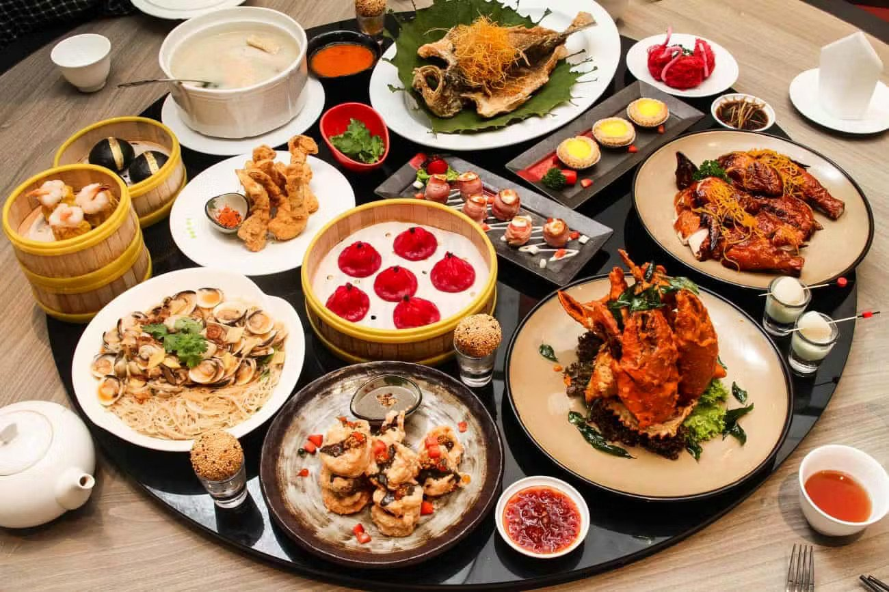
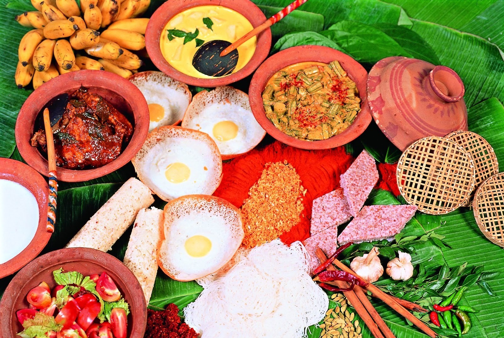

Chinese Foods
Do you love Chinese food? I do! From hotpots to dumplings,
Chinese food is
one of the most celebrated cuisines in the world.
Take a moment to learn about surprising historical and cultural facts behind your favorite delectable Chinese dishes!
Chinese cuisine comprise cuisines originating from China. Because of the Chinese diaspora and historical power of the country, Chinese cuisine has influenced many other cuisines in Asia and beyond, with modifications made to cater to local palates.
Chinese food staples such as rice, soy sauce, noodles, tea, chili oil, and tofu, and utensils such as chopsticks and the wok, can now be found worldwide.
1. Chinese food is one of the healthiest in the world.
Traditional Chinese food has to always be fresh. Most dishes are filled with huge quantities of vegetables, grass-fed meats, seafood and herbs and spices. Every ingredient is handpicked for medicinal purposes.
The Chinese people rarely eat canned/frozen food.
2.You never eat the same dish twice in China!
China has 34 provinces and every province has their own culinary traditions. Aside from this, the Chinese can whip up ingredients in so many ways because they have a lot of cooking methods.
For example, chicken could be steamed, stewed, stir-fried, roasted, soy-sauced, sweet and soured and more!
you can find more:

Sri Lankn Foods
Sri Lankan cuisine is a delightful fusion of flavors, blending spices, herbs, and vibrant ingredients to create a tapestry of culinary wonders.
From fiery curries to fragrant rice dishes, Sri Lankan food showcases a rich tapestry of history and culture. Explore the fascinating historical and cultural stories behind Sri Lankan cuisine and embark on a gastronomic journey that will tantalize your taste buds and awaken your senses!
Sri Lankan cuisine is known for its particular combinations of herbs, spices, fish, vegetables, rices, and fruits. The cuisine is highly centered around many varieties of rice, as well as coconut which is a ubiquitous plant throughout the country.
Seafood also plays a significant role in the cuisine, be it fresh fish or preserved fish.
As a country that was a hub in the historic oceanic silk road, contact with foreign traders brought new food items and cultural influences in addition to the local traditions of the country's ethnic groups, all of which have helped shape Sri Lankan cuisine.
Influences from Indian (particularly South Indian), Indonesian and Dutch cuisines are most evident with Sri Lankan cuisine sharing close ties to other neighbouring South and Southeast Asian cuisines.
1.Spices:
Sri Lankan cuisine is heavily influenced by the country's rich spice trade history. A wide variety of spices, including cinnamon, cardamom, cloves, coriander, cumin, and curry leaves, are used generously in Sri Lankan dishes.
This creates a complex and aromatic flavor profile.
you can find more..